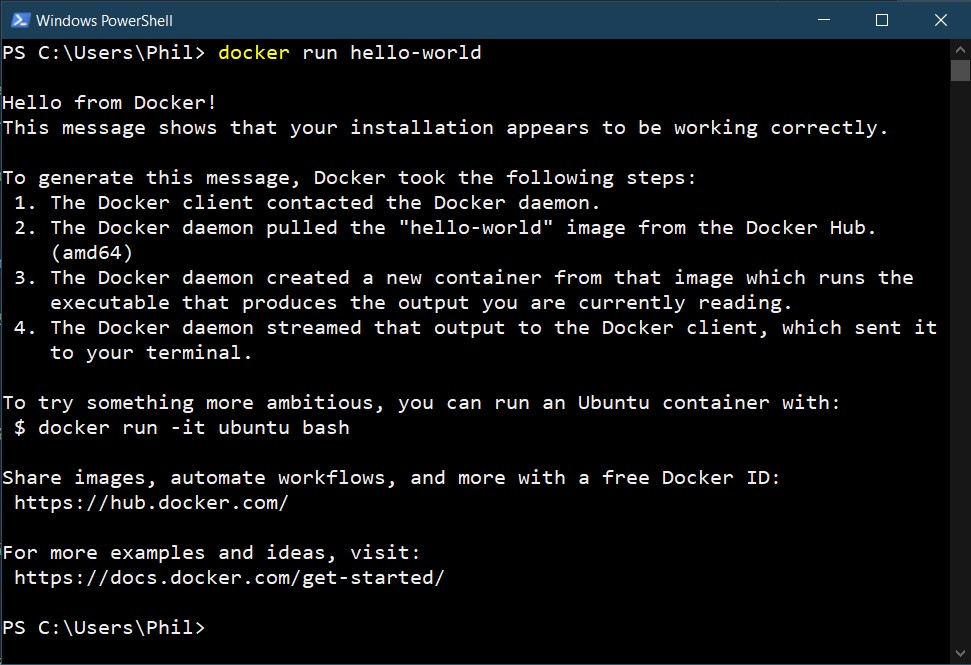

Tutorial - Docker Webserver
Install Docker
Download Docker Desktop and run the installer.
After the installation, you can run docker run hello-world to test your installation.
Pull an Ubuntu image
Run docker pull ubuntu in your command line window.
You can also use docker images to check existing Docker images on your computer.
Commit Changes to a Docker Image
Run docker run -it ubuntu:latest /bin/bash to start an interactive shell using bash
inside a container running the Ubuntu image.
- Update the system using apt-get update.
- Install apache2 and vim using apt-get install apache2 vim.
- Exit the Ubuntu container by typing exit.
- Check the container using docker ps -a.
-
Create a new Docker image using docker commit f1cc1e4c1f81 ubuntu-my_apache2, using your
Container ID from earlier. The new image will be named
ubuntu-my_apache2. - Check the new image using docker images.
Share Data Between Container and Host
-
Create a new directory on your computer named
local_dir. In this example, the absolute path to the example directory isC:\Users\Phil\Desktop\docker\local_dir\. Yours will be different. -
Run
docker run -it -p 127.0.0.1:80:80 -v C:\Users\Phil\Desktop\docker\local_dir\:/var/www/html ubuntu-my_apache2 /bin/bash
-
-itlogs you into an interactive shell and runs a command, in this case/bin/bash. -pexposes a port in the Docker container, in this case80.-
-vbinds a host directory to a directory inside the Docker container. In this case,C:\Users\Phil\Desktop\docker\local_dir\was bound to/var/www/htmlwhich happens to be the default location for an apache webserver.
-
vi Editor
-
Navigate to the
/var/www/htmldirectory within the Docker container.cd /var/www/html
-
Create an
index.htmlfile invi.vi index.html
- Press the i key to enter
INSERT mode. -
Write a basic HTML page with a title, an h1, and a p tag.
<html> <head> <title>Apache in Docker HW</title> </head> <body> <h1>Hello, World!</h1> <p>Congratulations!</p> </body> </html>
-
Use : to enter
COMMAND mode, then type wq to write your changes to file and quitvi. -
Check the
local_dirdirectory on your computer to see theindex.htmlfile.
Use Docker to Host a Website
Start the apache service using “/etc/init.d/apache2 restart in your Docker container, then on
your computer, open a web browser and navigate to 127.0.0.1 to see your website.